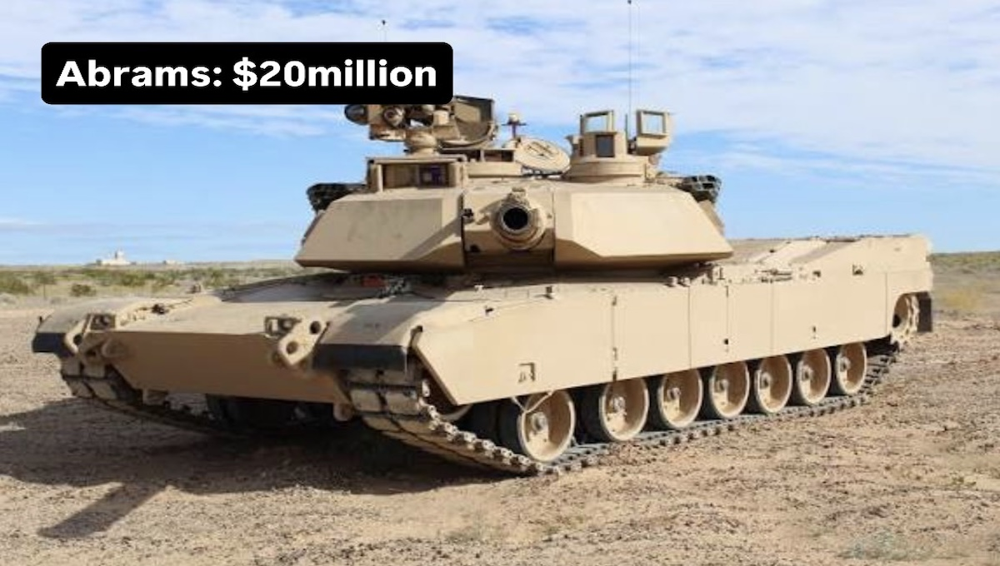
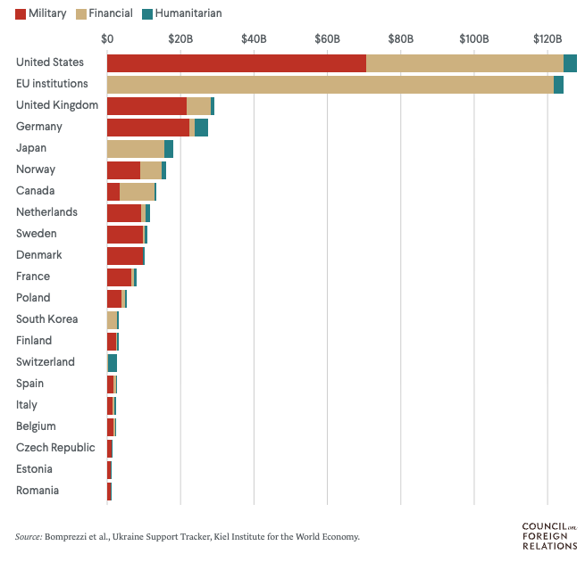
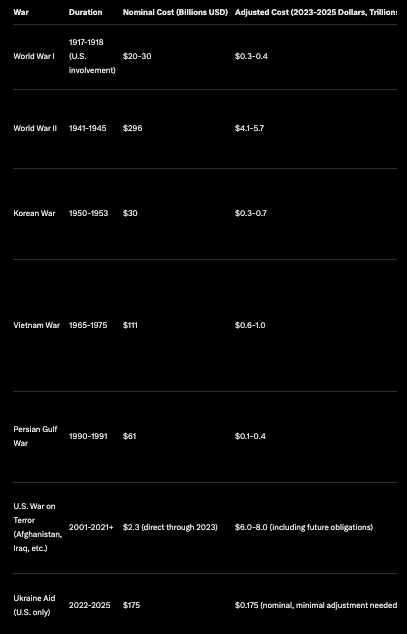

Ukraine War Costs Revealed: US & NATO Aid vs. Russia, China & North Korea Spending. Historical Comparison 2026

The Russian invasion of Ukraine in February 2022 marked the beginning of one of Europe's most significant conflicts since World War II, prompting an unprecedented international response in terms of financial, military, and humanitarian support.
Unlike direct U.S. involvement in past wars, the aid to Ukraine represents a form of proxy assistance, where Western nations bolster Ukraine's defense without deploying their own troops en masse.
While aid to Ukraine has been vital in sustaining the country's resistance, it pales in comparison to the trillions spent on world wars and prolonged counterinsurgencies. However, when viewed as a percentage of GDP or in per-year terms, the commitment reveals the evolving nature of geopolitical support in the 21st century. Relying on the latest available figures as of late 2025, noting that aid totals continue to evolve.
U.S. Aid to Ukraine
Since the invasion began, the United States has emerged as the single largest bilateral donor to Ukraine, channeling funds through congressional appropriations and executive actions.
According to the CFR, Congress has passed five major aid bills totaling approximately $175 billion in allocated spending. This figure encompasses military assistance, financial support for Ukraine's government budget, humanitarian aid, and regional security enhancements.
As of August 2025, the Kiel Institute reported U.S. spending at $130.6 billion, with projections pushing toward $175-183 billion by year's end, including undelivered commitments.
Breaking it down by category:
- Military Aid: Around $65-70 billion, including weapons transfers like Javelin missiles, HIMARS systems, Patriot air defenses, and armored vehicles. This aid is drawn from U.S. stockpiles or funded through the Ukraine Security Assistance Initiative (USAI), which procures new equipment. By January 2025, the U.S. had provided about 20% of Ukraine's military equipment in use.
- Financial and Economic Support: Over $30 billion in direct budget support to keep Ukraine's government operational, including salaries for civil servants and pensions. This has been crucial amid wartime economic disruptions.
- Humanitarian and Other Aid: Approximately $20-25 billion for refugee assistance, food security, and reconstruction efforts, coordinated through USAID and the State Department.
The U.S. aid represents a strategic investment in European stability, with oversight mechanisms like the Ukraine Oversight initiative ensuring accountability. Adjusted for inflation, this equates to roughly 0.2-0.3% of U.S. GDP annually, a fraction of peak wartime spending in historical conflicts.
EU and NATO Contributions
While the U.S. leads in bilateral terms, the European Union and its member states have collectively provided more aid, emphasizing financial loans and humanitarian efforts.
The EU's assistance, as reported by the European External Action Service (EEAS), totals close to $104 billion in direct support, with over $70 billion in military aid and up to $18 billion in macro-financial assistance. Including bilateral contributions from EU members, the total rises to about $197 billion as of November 2025, per BBC and CFR analyses.
Loans comprise around 35% of this, often backed by frozen Russian assets.
NATO, as an alliance, does not provide aid directly but coordinates member contributions through forums like the Ukraine Defense Contact Group, which has secured nearly $25 billion in pledges.
Non-EU NATO members like the UK ($16-20 billion), Norway ($7-8 billion), and Canada add to the tally. Overall, European allies (including the UK and Norway) have committed around $204 billion, with $166 billion disbursed by mid-2025.
Key donors include. Germany with €30-40 billion in military and financial aid. The UK with £12-15 billion (about $15-19 billion USD).Smaller nations like Latvia and Estonia, contributing 0.7-1% of their GDP, far outpacing larger economies proportionally.
Combined international aid from 41 countries totals over $380-430 billion in pledges, with $309-400 billion committed by June 2025.
This includes $82 billion in World Bank-mobilized financing. When including refugee support (over $131 billion for EU-hosted Ukrainians), the EU's effective total exceeds $250 billion.

Adversary Expenditures: Russia, China, North Korea, and Allied Support
To provide a fuller picture of the Ukraine conflict's financial dynamics, it's essential to examine the expenditures and support from Russia and its key allies like China, North Korea, and Iran.
Unlike Western aid, which is transparent and tracked through public appropriations, adversary spending is often opaque, relying on estimates from intelligence reports, think tanks, and media analyses.
Russia's direct war costs represent the bulk, while allies provide material and economic lifelines that sustain its efforts. Figures are drawn from sources like Ukrainian intelligence, the Council on Foreign Relations, and independent reports, with totals approximated through late 2025.
Russia's Direct War Costs
Russia, as the aggressor, has borne the heaviest financial burden, with estimates placing total expenditures at around $550 billion since the February 2022 invasion.
This includes military operations, equipment losses, personnel costs, and economic disruptions. According to Ukraine's Foreign Intelligence Service, this sum equates to 24 annual higher education budgets or 22 healthcare budgets in Russia. For 2025 alone, Russia disclosed spending 11 trillion rubles (about $135 billion), representing 5.1% of its GDP—marking the first official acknowledgment of annual war costs.
Breakdowns reveal heavy classified spending: In the first three quarters of 2025, open military budget items totaled 4.816 trillion rubles, while classified expenditures reached 7.038 trillion rubles (a 39% annual increase).
These costs exclude broader economic impacts, such as frozen reserves ($340 billion) and sanctions-induced losses. Averaging $150-200 billion annually, Russia's outlay far exceeds Western aid per year but reflects the inefficiencies of a protracted invasion.
China's Indirect Support
China's role is primarily indirect, serving as an economic lifeline for Russia through surged trade, dual-use exports, and limited military cooperation, rather than direct financial aid.
Bilateral trade doubled from pre-war levels, reaching $245 billion in 2024, more than twice the 2020 figure, and continuing into 2025 despite minor slowdowns. From 2022-2025, cumulative trade likely exceeded $900 billion, with China absorbing Russian energy exports (e.g., oil imports up 4.3% in September 2025) and supplying goods to fill sanction gaps.
This has been crucial for Russia's wartime resilience, effectively subsidizing its economy by an estimated $100-200 billion in excess trade value annually, though exact "support" figures are not disclosed.
Militarily, China provided drone components (e.g., batteries, cables) surging in 2025, intelligence sharing on Ukrainian targets, and joint exercises.
Foreign direct investment rose to $4 billion in 2024 (0.2% of Russian GDP), and yuan-denominated trade now accounts for 30% of Russia's external dealings. While not quantifiable as direct aid, this partnership has offset Western sanctions, valued implicitly in the hundreds of billions.
North Korea's Military Aid
North Korea has supplied Russia with significant military hardware and personnel since 2023, valued at up to $9.8-10 billion.
This includes artillery shells, rockets, missiles, heavy weapons, and troops deployed in Russian uniforms. Soldiers reportedly earn $2,000 monthly, potentially generating additional revenue for Pyongyang.
In return, Russia provided food, fuel, and military gear worth about $980 million, roughly one-tenth of North Korea's contributions. Higher estimates suggest the deal has bolstered North Korea's economy by $20 billion overall, including indirect benefits.
Iran's Support
Though not initially requested, Iran's contributions are noteworthy, supplying drones and missiles under a $1.75 billion deal for 6,000 Shahed-136 units, produced in Russia by September 2025.
Each drone costs $20,000-50,000, enabling cost-effective strikes. Payments included $104 million in gold, but Iran has expressed dissatisfaction over undelivered promises like Su-35 jets.
Overall, adversary support totals over $560-580 billion (dominated by Russia), creating an asymmetric financial contest where Western transparency contrasts with opaque alliances.
USA Historical War Spending
To contextualize the Ukraine aid, it's essential to compare it to the costs of major U.S. wars. These figures represent direct U.S. expenditures (military operations, personnel, and reconstruction), adjusted for inflation to approximate 2023-2025 dollars. Data draws from the Congressional Research Service (CRS), Brown University's Costs of War project, and historical analyses.
Unlike Ukraine aid, these were direct conflicts involving U.S. troops, often with higher human and economic costs.
The table below summarizes key wars, including duration, nominal costs at the time, and inflation-adjusted totals. Note that Ukraine aid is not a "war cost" for the U.S. but support spending, averaging $40-50 billion annually, far below peak wartime outlays.

Key Insights
U.S. aid to Ukraine ($175 billion over ~4 years) is comparable to the adjusted cost of the Korean War but dwarfs shorter conflicts like the Gulf War. However, it's a fraction (2-3%) of WW2's trillions or the War on Terror's $8 trillion, which spanned two decades and included direct combat.
Ukraine aid averages $40-45 billion/year, similar to Vietnam's annual spend (~$50-100 billion adjusted) but without U.S. casualties. WW2 peaked at over $1 trillion/year adjusted.
As a % of GDP, Ukraine aid is negligible compared to WW2's 40% or even Korea's 5%. The War on Terror, at 1-2% GDP/year, highlights how sustained low-intensity conflicts accumulate massive costs over time.
Historical wars often incur ongoing expenses like veteran benefits (e.g., Vietnam's $555 billion includes these). Ukraine aid may lead to future reconstruction costs, estimated at $524 billion total for Ukraine.
Geopolitical Commitments
The aid to Ukraine underscores a shift from direct intervention to allied support, allowing the U.S. and NATO to counter aggression at a lower human cost but still significant financial one.
While totaling hundreds of billions, it remains modest relative to the existential threats of past world wars. This comparison reveals the hidden toll of prolonged engagements like the War on Terror, where future obligations (e.g., $1.1 trillion for Iraq/Afghanistan veterans) balloon totals.
As the conflict persists into 2026, sustaining aid will require balancing domestic priorities with global security, potentially drawing on innovative funding like seized Russian assets. Ultimately, these figures remind us that the true cost of war extends beyond dollars to lives and stability.
Analysis By The Societal News Team 13JAN2026